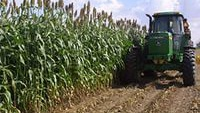
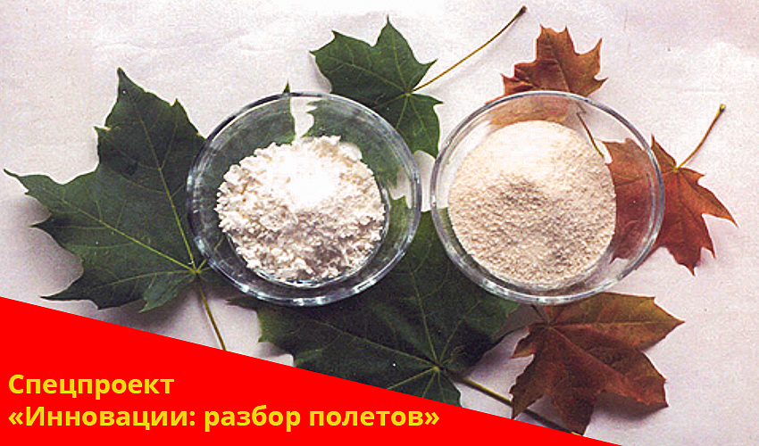
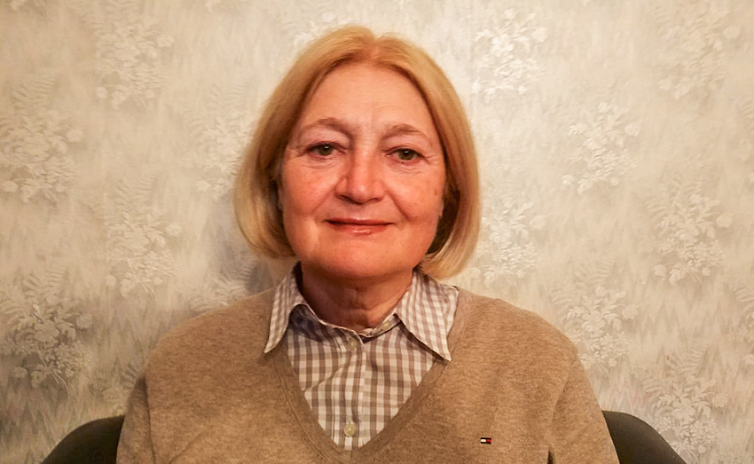
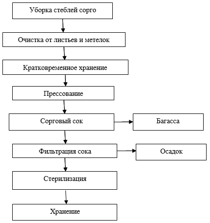

Every tonne of sorghum biomass can be transformed into high-value food, energy, and industrial products. This page covers the complete processing chain — from juice extraction to syrup, bioethanol, citric acid, and more.
Fiecare tonă de biomasă de sorg poate fi transformată în produse alimentare, energetice și industriale de mare valoare. Această pagină acoperă întregul lanț de procesare — de la extragerea sucului la sirop, bioetanol, acid citric și altele.
Processing Chain
Lanțul de Procesare
From biomass to finished product
De la biomasă la produs finit
🌿
Step 1
Etapa 1
Harvest
Recoltare
Sep – Oct. 80–160 t/ha
Sept – Oct. 80–160 t/ha
⚙️
Step 2
Etapa 2
Juice Extraction
Extragerea Sucului
TZ-20 press · 10 t/h
Presă TZ-20 · 10 t/h
🧪
Step 3
Etapa 3
Clarification
Limpezire
pH adjustment · filtration
Ajustare pH · filtrare
🔥
Step 4
Etapa 4
Vacuum Evaporation
Evaporare Vacuum
Rossi & Catelli POSEIDON DE
Rossi & Catelli POSEIDON DE
🏭
Step 5
Etapa 5
Final Products
Produse Finale
Syrup · Ethanol · Citric acid
Sirop · Etanol · Acid citric
Output from 100 Tonnes of Biomass
Randament din 100 Tone de Biomasă
Applying the full processing chain to a 100-hectare crop delivers the following outputs per year:
Aplicând întregul lanț de procesare la o cultură de 100 de hectare, se obțin anual următoarele rezultate:
🧃
50–55t
juice with 14–16% sugar
suc cu 14–16% zahăr
🍯
8–10 t/ha
sweet syrup (honey quality)
sirop dulce (calitate miere)
4,200 t/year capacity
⛽
10–15t
food-grade bioethanol
bioetanol alimentar
€1M/year revenue
🧴
Citric Acid
Acid Citric
same processing line
aceeași linie de procesare
€1.5M/year revenue
🔋
25–30t
bagasse → pellets / biogas
bagasă → pelete / biogaz
🌱
+1.5–2t
humus per ha/year from roots
humus per ha/an din rădăcini
Stage 1 — Juice Extraction
Etapa 1 — Extragerea Sucului
Pressing the stalks
Presarea tulpinilor
Sweet sorghum stalks are crushed and pressed using the TZ-20 industrial press line (Henan Tianzhong Machinery Co., China). From 1 tonne of biomass, approximately 500 kg of juice is extracted with a sugar content of 10–15%.
Tulpinile de sorg zaharat sunt zdrobite și presate cu linia industrială TZ-20 (Henan Tianzhong Machinery Co., China). Dintr-o tonă de biomasă se extrag aproximativ 500 kg de suc cu un conținut de zahăr de 10–15%.
⚙️ TZ-20 Press Line — Technical Specs
⚙️ Linia de Presare TZ-20 — Specificații Tehnice
Parameter
Parametru
Value
Valoare
Capacity
Capacitate
10 t / hour
Screw diameter
Diametrul șnecului
630 mm (double screw)
Power
Putere
37 kW
Mesh diameter
Diametrul plasei
650 mm
Dimensions
Dimensiuni
5800 × 1300 × 1800 mm
Weight
Greutate
5,300 kg
Speed
Viteza
12–15 rpm
Pressure control
Control presiune
Hydraulic
Hidraulic
Unit price (×2 units)
Preț unitar (×2 unități)
$29,000 USD (total $70,000 FOB Qingdao)
🧪 Juice Composition by Processing Stage
🧪 Compoziția Sucului pe Etape de Procesare
Data from the Institute of Food Industry, Republic of Moldova, 2008
Date de la Institutul de Alimentație, Republica Moldova, 2008
Stage 1 — Raw Juice
Etapa 1 — Suc Brut
Dry matterSubstanță uscată18.0%
Total sugarsZaharuri totale16.1%
pH5.15
PotassiumPotasiu3163 mg/L
AntioxidantsAntioxidanți0.17 mg/g
Stage 2 — Clarified
Etapa 2 — Limpezit
Dry matterSubstanță uscată17.8%
Total sugarsZaharuri totale15.7%
pH4.0
PotassiumPotasiu1390 mg/L
AntioxidantsAntioxidanți0.10 mg/g
Stage 3 — Concentrated
Etapa 3 — Concentrat
Dry matterSubstanță uscată71.7%
Total sugarsZaharuri totale22.3%
SucroseZaharoză17.3%
AppearanceAspectBrown syrupSirop cafeniu
TasteGustSweet, caramelDulce, caramel
Stage 2 — Syrup Production
Etapa 2 — Producerea Siropului
Sweet sorghum syrup
Siropul de sorg zaharat
The clarified juice is concentrated under vacuum using the Italian Rossi & Catelli POSEIDON DE evaporator, producing a pure natural syrup with no additives or preservatives — only water, glucose and fructose.
Sucul limpezit este concentrat sub vid cu evaporatorul italian Rossi & Catelli POSEIDON DE, producând un sirop natural pur fără aditivi sau conservanți — doar apă, glucoză și fructoză.
🏭 Vacuum Evaporator — Rossi & Catelli POSEIDON DE
🏭 Evaporator Vacuum — Rossi & Catelli POSEIDON DE
Manufactured by CFT Group, Italy. Designed for vacuum concentration of viscous liquid products using falling-film technology (TVR). The parallel-flow function ensures the highest-concentration product evaporates at the lowest temperature, preserving all organoleptic characteristics.
Fabricat de CFT Group, Italia. Conceput pentru concentrarea sub vid a produselor lichide vâscoase prin tehnologia filmului în cădere (TVR). Fluxul paralel asigură că produsul cu cea mai mare concentrație se evaporă la temperatura cea mai scăzută, păstrând toate caracteristicile organoleptice.
Annual output
Producție anuală
4,200 tonnes of syrup
Investment
Investiție
€300,000
Origin
Origine
Italy (CFT Group)
Technology
Tehnologie
Falling film + TVR vacuum
Film în cădere + vacuum TVR
🍯 Syrup Composition & Key Facts
🍯 Compoziția și Proprietățile Siropului
30%
Natural water
Apă naturală
35%
Glucose
35%
Fructose
0%
Additives
Aditivi
Ranked 5th out of 40 foods tested for antioxidant content
Clasat pe locul 5 din 40 de alimente testate pentru conținutul de antioxidanți
Contains iron, calcium and potassium — unlike refined sugar
Conține fier, calciu și potasiu — spre deosebire de zahărul rafinat
Does not require refrigeration — will not mold
Nu necesită refrigerare — nu face mucegai
NOT the same as molasses — molasses is a sugar industry byproduct; sorghum syrup is pure pressed juice
NU este același lucru cu melasa — melasa este un subprodus al industriei zahărului; siropul de sorg este suc pur presat
Hungarian company first introduced sorghum syrup to European markets in 2018 (FoodNavigator)
O companie ungară a introdus prima dată siropul de sorg pe piețele europene în 2018 (FoodNavigator)
EU Novel Food approval process initiated (Regulation EU 2015/2283)
Proces de aprobare Novel Food UE inițiat (Regulamentul UE 2015/2283)




Other Products from Juice
Alte Produse din Suc
More from the same juice
Mai multe din același suc
The same juice stream can feed multiple processing lines — citric acid, bioethanol, vinegar, amino acids and yeast protein all use largely the same base equipment.
Același flux de suc poate alimenta mai multe linii de procesare — acidul citric, bioetanolul, oțetul, aminoacizii și proteina din drojdie folosesc în mare parte același echipament de bază.
⛽ Bioethanol (Food-Grade Alcohol)
⛽ Bioetanol (Alcool Alimentar)
From 100t biomass: 10–15 tonnes of ethanol. Processing line cost: €600,000 (China). Estimated annual revenue: €1,000,000.
Din 100t biomasă: 10–15 tone etanol. Costul liniei de procesare: €600.000 (China). Venit anual estimat: €1.000.000.
€600K
Equipment cost
Cost echipament
€1M
Annual revenue
Venit anual
🧴 Citric Acid
🧴 Acid Citric
Highest-value product from the juice. Processing line cost: €1,000,000. Estimated annual revenue: €1,500,000. Same infrastructure also supports vinegar, amino acids and yeast protein production (each requiring ~€200K additional).
Cel mai valoros produs din suc. Costul liniei: €1.000.000. Venit anual estimat: €1.500.000. Aceeași infrastructură suportă și producerea de oțet, aminoacizi și proteine din drojdie (fiecare necesitând ~€200K suplimentar).
€1M
Equipment cost
Cost echipament
€1.5M
Annual revenue
Venit anual
🔋 Bagasse — Energy & Materials
🔋 Bagasă — Energie și Materiale
25–30 tonnes of dry bagasse per 100t biomass. This fibre-rich residue has significant secondary value:
25–30 tone de bagasă uscată per 100t biomasă. Acest reziduu bogat în fibre are o valoare secundară semnificativă: